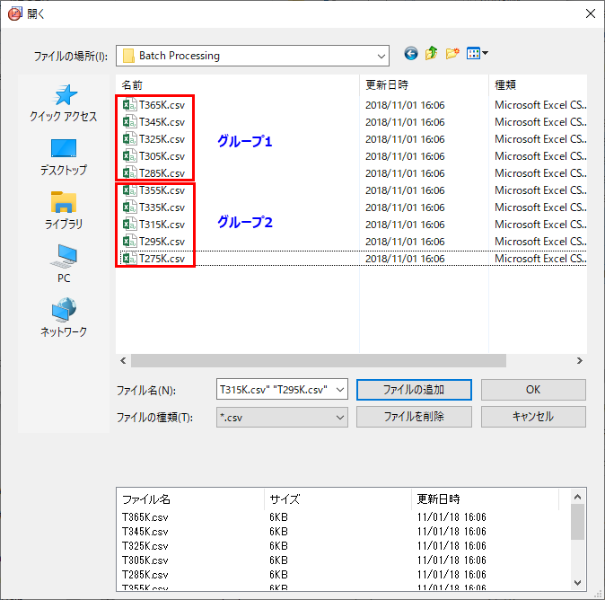
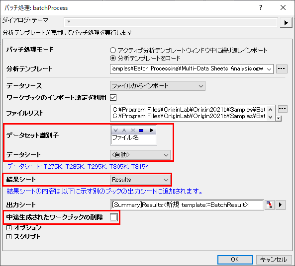
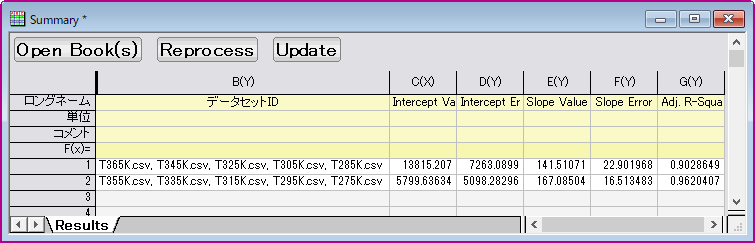

複数データシートの分析テンプレートを使用したデータセットグループのバッチプロセス
バッチプロセス－グループデータ
概要
Originは、グループ化されたデータセットで、複数のデータシートでの分析テンプレートを使用した、バッチ解析を行うことが出来ます。
必要なOriginのバージョン: 2016 SR0以降
 | バッチ処理ほどの柔軟さや強力さはありませんが、このチュートリアルで概説されている手順を使用して、アクティブなブックでインポートおよび分析操作を「複製」できます。
|
学習する項目
このチュートリアルでは、以下の項目について解説します。
- 複数データシートの分析テンプレートを作成
- 分析テンプレートを使用した、グループ化されたデータセットのバッチ解析を実行
分析テンプレートの働き
<Origin EXE Folder>\Samples\Batch Processing フォルダに、作成しようとしている複数データシートの分析テンプレートMulti-Data Sheets Analysis.ogw があります。5つのグループになっている<Origin EXE Folder>\Samples\Batch Processingフォルダにある10個のCSVファイルを、この分析テンプレートは処理します。分析テンプレートの中の連続したデータシートに、データファイルは5個ずつインポートされ、非線形曲線フィットでピーク面積を取得し、その各曲線の標準偏差を導き出します。最終的には、ファイル名と出力結果から抽出された温度データ対ピーク面積に線形フィットを実行します。
ステップ
複数データシートの分析テンプレートを作成
連続ワークシートにCSVファイルをインポート
- 新しいワークブックを作成します。メニューからデータ：複数ファイルに接続をクリックしてfiles2dcダイアログを開きます。
- データコネクタ のドロップダウンからCSVを選択し、さらにブラウズして<Origin EXE Folder>\Samples\Batch Processingフォルダへ移動し、最初の5つのファイルを選びます。
- 同一ブックにチェックを入れてOKをクリックします。
ピーク面積を取得するために非線形曲線フィットを実行
- シートT275kの2列目を選択し、Ctrl + Y またはメニューの 解析：フィット：非線形曲線フィットからNLFit ダイアログを開きます。
- 再計算 を 自動にセットします。
- Origin Basic Functions カテゴリから、関数にGaussを選択します。
- フィットボタンをクリックし、フィットを実行します。OKをクリックして、ダイアログを閉じます。
- 他のデータ T285k, T295K, T305K, T315K にも上記の4-7のステップを繰り返し、5つ全てのピークに対してピーク面積を取得します。
線形フィットの為のデータを準備
- シートのタブFitNLCurve5 で右クリックして追加を選択し、ワークシートを追加します。名前の上でダブルクリックし、TempData と名前を入力します。
- Ctrlキーを押しながらDキーを押し、列の追加ダイアログを開きます。編集ボックスに2を入力して、2つの列を追加します。OKボタンをクリックして、ダイアログを閉じます。
- 4つの列のロングネームに Data File, Temperature, Area Value, Area Error をそれぞれ入力します。
- Data File列の最初のデータセルの上で右クリックし、変数の挿入をクリックしてダイアログを開きます。右パネルで、Bookノードを右クリックし、シートレベルを表示にチェックを入れ、ブック内にシートが表示されるようにします。右側のパネルのT275K シートをクリックし、左側のパネルでラベルのタブをクリックします。プロパティで名前の行を選択し、挿入ボタンをクリックして、前に選択したセルにシート名を挿入します。
- 他のワークシートにもこのステップを繰り返し、Data File の列にシート名を追加します。
- 次に、最初の列のシート名から温度値を抽出します。Temperature の列を選択し、右クリックして列値の設定をクリックします。次の式を編集ボックスに入力して、ファイル名から中央の3つの数字を抽出します。OKをクリックしてダイアログを閉じます。
Value(mid(col(A),2,3)$)
- FitNL1 のシートに移動し、概要の欄にあるＡのセクションの下にある、2つのセルを1つずつ選択します。右クリックしてコピーを選択し、データをコピーします。TempData シートに移動し、Area Value と Area Error 列の最初の行にリンクを貼り付けます。（1つずつ行います）他の4つのデータファイルにも、このステップを繰り返します。
- Temperature の列属性を X, Area Error の列属性を Y Error に設定します。
線形フィットを実行し、結果シートを作成
- Area Valueと Area Errorの列を選択し、メニューの 解析：フィット：線形フィットと進みダイアログを開きます。 再計算モードを 自動にし、 OK を押してダイアログを閉じます。OKをクリックして、ダイアログを閉じます。
- FitLinearCurve1 シートのタブで右クリックし、追加を選択して新しいシートを追加し、Results と名前を付けます。
- Ctrlキーを押しながらDキーを押し、列の追加ダイアログを開きます。編集ボックスに3を入力して、3つの列を追加します。
- 5つの列のロングネームに Intercept Value, Intercept Error, Slope Value, Slope Error 及びAdj.R-Square,とそれぞれ指定します。
- FitLinear1 シートに移動して、概要の下にある5つのセル値をコピーし、Results シートに戻り、最初のデータ行の最初のセルをクリックして、リンクとして貼り付けます。
- メニューからファイル：ワークブックを分析テンプレートとして保存 を選択し、分析テンプレートとして保存して、Multi-Data Sheets Analysis と名前を付けます。
グループでのバッチ解析ファイル
<Origin EXE Folder>\Samples\Batch Processing フォルダに、10個のCSVデータファイルがあります。これらを2つのグループに分け、次のように並べ替えます。group 1 はT365K, T345K, T325K, T305K, T285K、グループ２はT355K, T335K, T315K, T295K, T275Kです。上記のプロセスで作成した分析テンプレートを使って、これら2つのグループ化されたファイルを処理します。
- メニューからファイル：バッチ処理のダイアログを開き、分析テンプレートの編集ボックスの隣にある、...のボタンをクリックし、Multi-Data Sheets Analysis.ogwu 分析テンプレートを検索します。
- ファイルリストの隣にある...のボタンをクリックして、開くダイアログを開きます。まず、次のようにそれらのデータを一つずつドラッグアンドドロップで順番を並べ替え、ファイルの追加 ボタンをクリックして、リストにファイルを追加します。OKボタンをクリックして、ダイアログを閉じます。

- データセット識別子でファイル名を選択し、結果シートとしてResultsを設定、中途生成されたワークブックの削除のチェックを外します。

- OKボタンをクリックして、処理を開始します。OKボタンを押してバッチ処理ダイアログの設定を分析テンプレートに保存します（これはOrigin 2018bより可能です）。次のように、解析結果はSummaryのワークブックに出力されます。

| 出力シート（Summaryブック、Resultシート)の上部に3つのボタンが追加されます。
- Open Book(s):中途生成されたワークブックの削除をオンにしており（上のステップ3をご覧ください）、あとからこれらのシートが必要だと判断した場合にはResultシートで対応する行を選択し、このボタンをクリックすることで削除されたブックを再生成することができます。
- Reprocess:外部のデータファイルに変更があった場合にこのボタンをクリックして再インポートと結果の更新を行うことができます。
- Update:分析の入力側で変更があった際に（例：データのマスクをした）、このボタンをクリックして結果を更新できます。
|